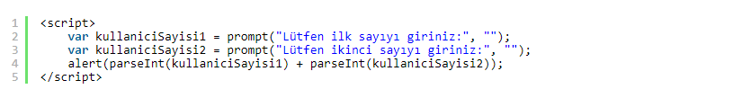
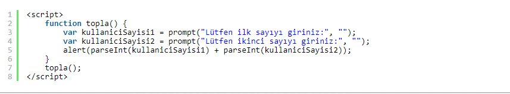
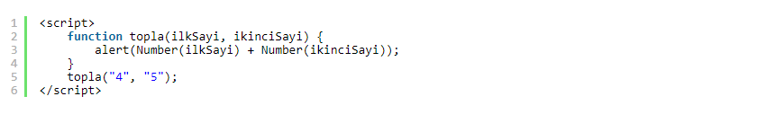
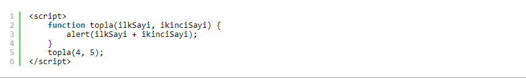
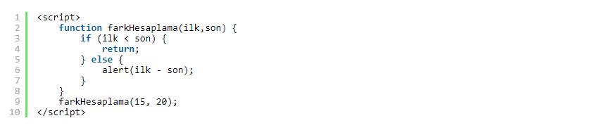
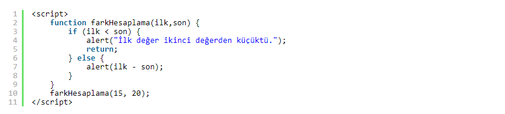
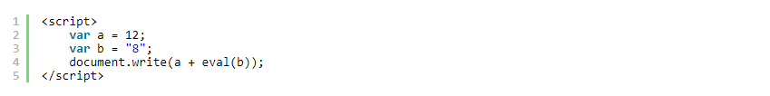

Fonksiyonlar bir işlevi yerine getiren kod bloklarıdır. Eğer bir projede birden fazla sayfada ya da yerde çalışmasını istediğimiz kodlar varsa imdadımıza fonksiyonlar yetişir. JavaScript'in nesne tabanlı (object-oriented) bir dil olmasından kaynaklı olarak belirli olayların gerçekleşmesini sağlamak için fonksiyonları kullanabiliriz.
Fonksiyonlar hazır ve kullanıcı tanımlı olmak üzere iki temel sınıfa ayrılırlar. Diğer bir sınıflama yöntemi ise parametreli ya da parametresiz olmalarıdır. Şimdi parametresiz fonksiyonlarla yavaş yavaş fonksiyonları öğrenmeye başlayalım.
Parametresiz fonksiyonlar adından da anlaşılacağı gibi herhangi bir parametreye gerek duymadan ve fonksiyonda tanımlanan kodların yerine getirilmesi ile çalışan fonksiyonlardır.

Şeklinde kodlarımız olsun. Kodu çalıştırdığımızda ilk sayı için bir bilgi penceresi, ilk sayıyı girdikten sonra ise ikinci sayı için bir bilgi penceresi açılacak. İkinci sayıyı girdikten sonra ise sonuç, uyarı penceresi olarak yazdırılacak. parseInt( ) ise prompt fonksiyonu ile alınan string veriyi number veri türüne çevirecek. Unutulmamalıdır ki kullanıcıdan alınan veriler daima string türündedir.
Diyelim ki bu kodları bu sayfada kullandık. Fakat başka bir sayfada da kullanmak istiyoruz. Bunun için sil baştan üç satır kodu tekrar yazmayız. Fonksiyonumuzu tanımlarız ve kendi oluşturduğumuz js dosyasına yazarız ve js dosyasını da layout'umuza ekleriz. İşler bu şekilde yürüyor.
Şimdi ilk parametresiz fonksiyonumuzu yazalım.

İşte fonksiyon tanımlamak bu kadar basit. function yazdıktan sonra fonksiyon adımı verdim ve scope alanına çalışmasını istediğim kodları yazdım. Sonrasında da topla() fonksiyonumu çalıştırdım. Fonksiyonumu dahili bir js dosyasında tanımlarsam projemin istediğim sayfasında kullanabilirim.
Kod yazarken iki değeri kısa bir şekilde toplamak istiyoruz diyelim. Ve bu kodları başka sayfalarda da kullanacağız. Bunun için aşağıdaki gibi parametreli bir fonksiyon tanımlamamız yeterlidir.

ilkSayi ve ikinciSayi şeklinde iki parametresi olan topla isimli bir fonksiyon tanımladım. Number( ) fonksiyonu ile bu iki parametreyi number veri türüne çevirdim. Kodlarımı çalıştırdığım zaman "9" yanıtını alacağım.

Bu kodları daha kısa bir şekilde de yazabilirim. Sadece Number( ) fonksiyonunu öğrenmeniz amacıyla ilk örneği verdim.
Bazen kodlarımızda çalışmasını istemediğimiz alanlar olabilir. Hatırlarsanız bir önceki dersimizde continue deyimini kullanmıştık. continue'da çalışmasını istemediğimiz kodlar çalışmaz; fakat geri kalan kodlar çalışır. return'de ise kodların çalışmasını istemediğimiz kısmına gelindiğinde fonksiyondan çıkılır ve altındaki kodları çalıştırmaz. Aralarında böyle bir fark vardır.

Fark hesabı yapan bir fonksiyon yazdım. Eğer ilk değer, ikinci değerden küçükse fonksiyondan çıkacağım. Değilse sonu yazdıracağım.

Bu fonksiyonu bu şekilde bir uyarıyla da yazabilirsiniz.
Bu dersimize kadar write( ), alert( ), prompt( ), sup( ), concat( ) gibi birçok hazır fonksiyon gördük. Hazır fonksiyonlar kod yazımında kolaylık sağlayan JavaScript ile hazır gelen fonksiyon gruplarıdır. Şimdi birkaç tanesini daha öğrenelim.
eval( ): Değişkenin türünü algılayıp dönüştürme (convert) işlemi yapar.

a değişkenim number, b değişkenim ise string veri türünde. eval( ) fonksiyonu ile iki değeri topladığımda "20" yanıtını aldım. eval( ), b değişkeninin bir string olduğunu anladı ve onu number veri türüne çevirdi. Eğer eval( ) kullanmasaydım "128" yanıtını alacaktım ve sadece string birleştirme yapmış olacaktı.
parseInt( ) ve parseFloat: parseInt( ) veriyi integer türüne yani tamsayı türüne dönüştürür. parseFloat( ) ise ondalıklı sayıya dönüştürme işlemi yapar.
String( ) ve Number( ): String( ) veriyi string türüne, Number( ) ise number türüne dönüştürür.